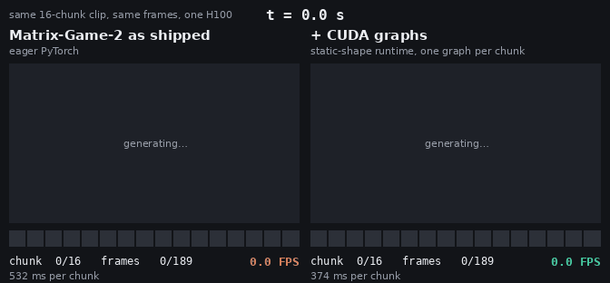
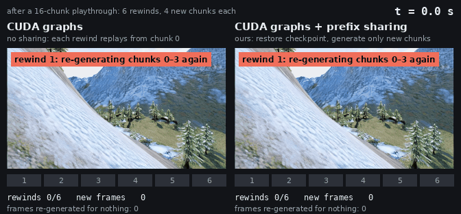

Every frame on both sides of both races is bitwise identical to Matrix-Game-2 as shipped (checked by hash). Race 1 isolates the CUDA-graph runtime. Race 2 runs CUDA graphs on both sides and adds exact prefix sharing on one. Each panel shows frames as they are produced, on its own measured timeline.
Both sides generate the same 16-chunk clip (189 frames) with the same model, Wan VAE and noise. The only change is how the forward pass is launched.

CUDA graphs speed up the diffusion model, which was waiting on the CPU to launch kernels. The VAE decoder was already busy on the GPU, so it barely changes and now takes 40% of each chunk.
As shipped, each forward pass issues about 3,600 kernel launches and 1,400 CPU–GPU syncs; the GPU sat idle 38% of the time. Now a whole chunk (3 denoising steps and the cache update) replays as one CUDA graph, and the GPU stays 99% busy.
Every attention in Matrix-Game-2 sees exactly one chunk of history plus the current chunk. The runtime keeps that history in fixed buffers, so shapes never change after the first chunk.
The fixed history buffers hold 0.60 GiB per session instead of 1.51 GiB for the original rolling caches, which also makes sessions cheaper to pause and resume.
Speedup over the full benchmark (2 start images, two workloads, 16-chunk paths): 1.40× and 1.42×. Every request's frames match Matrix-Game-2 as shipped bit for bit (checked by hash).
Timings cover generation, decoding and conversion to 8-bit frames in host memory. Video encoding and network delivery are not included.
After a 16-chunk playthrough, the player rewinds six times (to chunks 4, 6, …, 14) and plays four new chunks from each point. Without sharing, every rewind is a new request that replays the path from chunk 0. With sharing, the server restores the checkpoint at the rewind point and generates only the four new chunks.

A checkpoint holds the diffusion model's history buffers (0.60 GiB) and the Wan VAE decoder state (0.99 GiB), saved every 2 chunks on paths that later branch. Restoring one is a GPU copy. Rewinds that land between checkpoints replay at most one chunk from its stored latent.
Whole-workload numbers include the first playthrough, which sharing cannot speed up: rewind 70.3 s → 30.3 s, explore (8 players branching at chunks 4, 8 and 12) 96.5 s → 45.6 s, over 2 start images. Against Matrix-Game-2 as shipped, CUDA graphs and sharing together give 3.29× on rewind and 2.97× on explore.